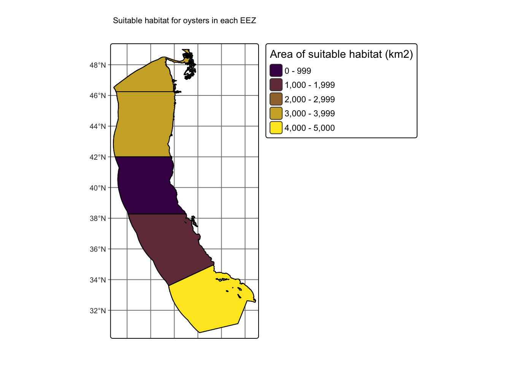
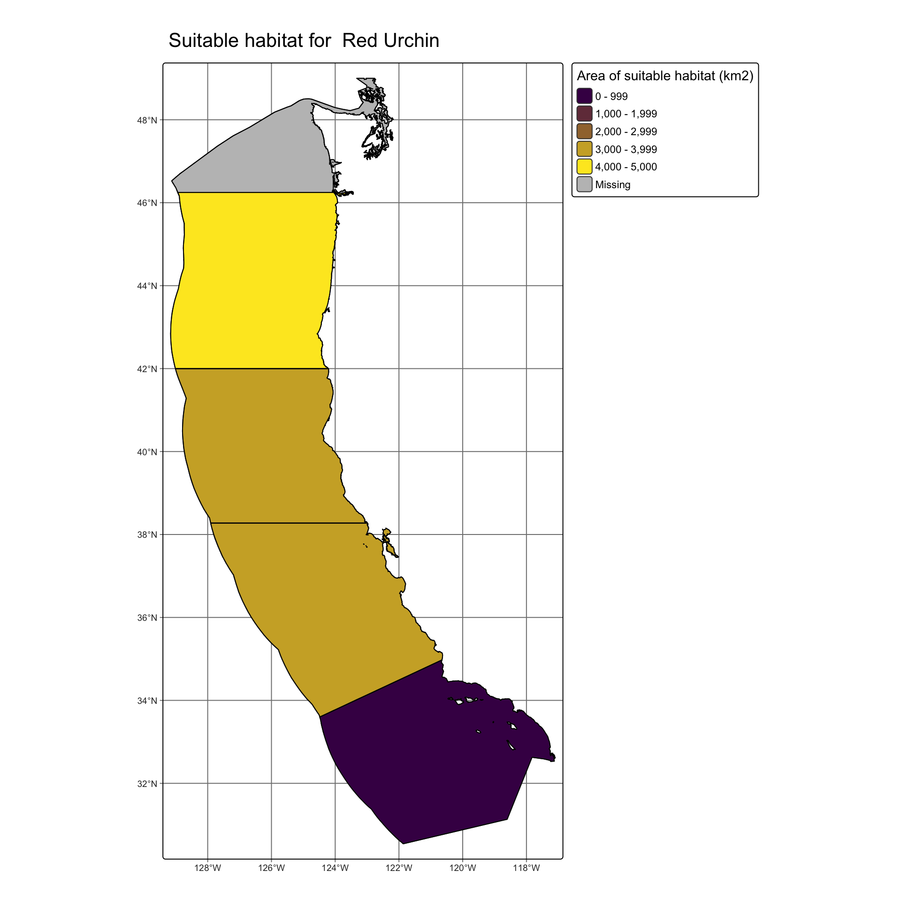

Research Question: Which areas along the U.S. West Coast should be prioritized for marine aquaculture development, based on habitat suitability for multiple commercially important species?
Background
In an era where we are facing an increasing global human population alongside historic losses of biodiversity and overfishing it is vital to focus on sustainable ways to feed our world. Marine aquaculture, especially offshore marine aquaculture (Froehlich et al 2017), poses a promising future for a more sustainable method of obtaining enough animal protein to meet global demand for animal protein (Gentry et al 2017). First, it is vital to identify what areas to target for the development of marine aquaculture, but this will likely be species-specific, as different species’ physiologies will determine what areas in the ocean are suitable for them. Here, I will focus on determining the suitable area for different species based on their depth tolerance and temperature tolerance.
Here, I will demonstrate the utility of the generalized function in R to visualize the areas that are suitable for Red Urchin. Sea urchin aquaculture would be widely applicable for society, as sea urchins are not only harvested for their uni and roe for consumption, but they also contain molecules of pharmaceutical importance for ocular disease investigation, and for biologically active food development (Rubilar & Cardozo 2021).
Data description
I am using Sea Surface Temperature (SST) and Bathymetry data from the ocean off the West Coast of the USA to calculate the suitable habitat in each of the exclusive economic zones in the area for different marine species of aquaculture interest. The SST data was generated from the NOAA Coral Reef Watch 5km Daily Global Satellite Sea Surface Temperature Anomaly, version 3.1, for the years 2008-2012, and each year is a separate raster, so I averaged the SST for each point across the four years and converted to Celsius. The Bathymetry data was obtained using General Bathymetric Chart of the Oceans (GEBCO), for the area west of the USA. In order to determine habitat suitability for certain organisms of aquaculture importance, I used SeaLifeBase to gather the minimum and maximum temperature and depth the species can survive at, which are input into analysis. Then, I use the exclusive economic zone data, obtained through Marineregions.org, to calculate the suitable area for the species in each of the zones in order to compare across zones.
Analysis
Plan
The goal of this work is to create a workflow that can be generalized to any marine species in this geographic areas (in the exclusive economic zones off the West coast of the USA). Thus, I will first walk through the building of the workflow (Part A) for one organism type, oysters. Then in Part B, I will incorporate all of the aspects of the analysis into one function that can work for any species.
In Part A, I will (1) import and clean the data for downstream analysis, (2) Determine and map the suitable locations based on SST and depth for a a species, (3) calculate the suitable area per exclusive economic zone, and (4) build a map of the habitable area per eez.
In Part B, I will take the workflow from part A and turn it into a single function, that can take in temperature and depth tolerance data for any species, and output a map with the habitable area per exclusive economic zone in this geographic region.
Part A
A.1: Import & clean data
Here, I read in the data, calculate the average sea surface temperature (and convert to Celsius), ensure the bathymetry raster matches the coordinate reference system, extent, and resolution of the SST, and ensure the exclusive economic zone data matches the crs.
Code
# load libraries library(tidyverse) # data wranglinglibrary(janitor) # data wranglinglibrary(sf) # for spatial datalibrary(tmap) # for pretty mapslibrary(here) # file pathinglibrary(viridisLite) # colorslibrary(patchwork) # combine plotslibrary(stars) # rasterslibrary(terra) # rasters#..................Sea Surface Temp (SST) Data...................# read in each raster, one per yearsst_2008 <-rast(here::here("blog", "aquaculture-area-analysis", "data", "average_annual_sst_2008.tif")) sst_2009 <-rast(here("blog", "aquaculture-area-analysis", "data", "average_annual_sst_2009.tif"))sst_2010 <-rast(here("blog", "aquaculture-area-analysis", "data", "average_annual_sst_2010.tif"))sst_2011 <-rast(here("blog", "aquaculture-area-analysis", "data", "average_annual_sst_2011.tif"))sst_2012 <-rast(here("blog", "aquaculture-area-analysis", "data", "average_annual_sst_2012.tif"))# combine SST rasters into a raster stacksst <-c(sst_2008, sst_2009, sst_2010, sst_2011, sst_2012)#assign names to each raster layernames(sst) <-c("2008", "2009","2010","2011","2012")# local algebra to find the mean sst for each spotsst_mean <-mean(sst, na.rm =TRUE)# global algebra to subtract 273.15 to convert from from Kelvin to Celsiussst_c <- sst_mean -273.15#........................Bathymetry Data.........................# read in bathymetry rasterbath <-rast(here("blog", "aquaculture-area-analysis", "data", "depth.tif"))# SAME CRS: data check: ensure same crs and reporject if it is notif(crs(bath) ==crs(sst_c)) {# print("coordinate reference systems match") # uncomment this for messages to print} else{ bath <-project(bath, sst_c) }# SAME EXTENT: crop depth raster to match the extent of the SST raster# crop bathymetry raster to extent of sst_cbath_crop <-crop(bath, sst_c)# SAME RESOLUTION: resample to ensure the resolutions match# using the nearest neighbor approach# done in discussion section 4bath_final <-resample(bath_crop, y = sst_c, method ="near") # for nearest neighbor#...............Exclusive Economic Zone (EEZ) Data...............eez <-st_read(here("blog", "aquaculture-area-analysis", "data", "wc_regions_clean.shp"), quiet =TRUE) # no message output# crs matchif(crs(eez) ==crs(sst_c)) {# print("coordinate reference systems match") # uncomment this for messages to print} else{ eez <-st_transform(eez, crs =st_crs(sst_c))}
A.2: Suitable locations for oysters
Now I will find suitable locations for marine aquaculture in terms of both SST and depth. Here, I will use oysters as an example organism, and they can only exist between 11-30 degrees C and -70 through 0 meters below sea level.
I will build matrices for temperature sst_matrix, and the depth bath_matrix, which include all values from -Infinity to +Infinity, specifying if they are habitable for the species with a 1 or uninhabitable with a 0. Next, I will reclassify the original rasters with whether each area is suitable using its matrix.
Code
# SST first!# lets build a matrixsst_matrix <-matrix(c(-Inf, 11, 0, # from -inf temp to 11, too cold, make a 011, 30, 1, # good zone! make it 130, Inf, 0), # from 30 to inf is too hot, make it a 0ncol =3, byrow =TRUE)# use reclassification matrix to reclassify temperature raster to suitable areas according to tempsst_rcl <-classify(sst_c, rcl = sst_matrix)# Now Depth!# lets build a matrixbath_matrix <-matrix(c(-Inf, -70, 0, # from -inf to -70 too deep, make a 0-70, 0, 1, # good zone! make it 10, Inf, 0), # 0 to infinity too highncol =3, byrow =TRUE)# use reclassification matrix to reclassify bathymetry raster to suitable areas according to depthbath_rcl <-classify(bath_final, rcl = bath_matrix)
The SST and depth rasters now identify the suitability of locations as 0 or 1. To find locations that have both suitable temperature and depth, I can use a map algebra trick and mulitply the rasters together. This works because anything multiplied by 0 equals 0 and anything multiplied by 1 equals itself. Thus, any areas that are uninhabitable due to temperature or depth or both will be 0, and only areas where both are habitable (multiplying 1*1) will end up as 1, also known as habitable area.
Code
# determine the suitable cells using the reclassified sst and depth multiplying themsuitable_cells <- sst_rcl * bath_rcl# make 0's NAsuitable_cells[suitable_cells ==0] <-NA
A.3: Area per EEZ
Now that we know which areas off the West Coast of the USA are habitable for our species of interest, here oysters, based on SST and depth, we can calculate how much area is habitable in each exclusive economic zone (EEZ), to allow for comparison across zones.
First, I will mask the habitable area in the west coast by cropping the eez data to the data, thus showing which area is habitable for oysters within each eez. I will also rasterize the eez data, and compute the area covered by each raster cell in km for downstream analysis.
Next, I will calculate the total suitable area for each economic zone using the zonal function. I will end up with a dataframe with the suitable area per economic zone
Code
# crop suitable cells to eezsuitable_cropped <-crop(suitable_cells, eez)# rasterize eezeez_rast <-rasterize(eez, suitable_cropped, field ="area_km2")# Compute the area covered by individual raster cells in kmsuitable_cropped <- terra::cellSize(suitable_cropped, # Compute the area covered by individual raster cellsmask=TRUE, # If TRUE, cells that are NA remain NA in the outputlyrs=FALSE, # If TRUE and mask=TRUE, the output has the same number of layers as inputunit="km") # report the cell area in km# use zonal stats to get the sum of the area in each eezzones_suitarea <- terra::zonal(suitable_cropped, # x: SpatRaster eez_rast, # y: needs to be terra objectfun ="sum", # sum up the areana.rm =TRUE) # remember to remove NA's!# update the column names from the initial dataframe of the eezzones_clean <-cbind(eez, zones_suitarea) %>%# clean dataframe for ease of use dplyr::select(rgn, area_km2, area) %>%# select columns I care aboutrename("suitable_area"="area") # rename to something prettier
A.4: Build map
I will now build a map of the amount of habitable area there is for this species (oysters) per exclusive economic zone.
Code
map <-tm_shape(zones_clean) +# vector data, use tmshape. tm_graticules() +# add graticules at this layer# next layer: fill by area of suitable habitattm_polygons(fill ="suitable_area", # column name with the values# specify the color scale, using viridis because it is colorblind friendlyfill.scale =tm_scale(values =viridis(2)), fill.legend =tm_legend(title ="Area of suitable habitat (km2)", position =tm_pos_out("right"))) +# next layer: show the outlines of the zones clearlytm_borders(col ="black") +# borders of the counties# add map elementstm_title(text ="Suitable habitat for this species in each eez") map

Part B: Generalizable workflow
Here I build the function to encompass all that I’ve done so far, so I can input data for any species in this area and get a map output.
Code
suitable_habitat <-function(bath, # bathymetry raster eez, # eez spatial dataframe sst_c, # raster of sea surface temp; #with mean sst for the time period you want min_sst, # string with the minimum temp in C max_sst, # string with the max temp in C min_depth_m, # string with the minimum depth in m max_depth_m, # string with the maximum temp in m species_name) # string with species name {#...............STEP 1: Bathymetry raster cleaning...............# SAME CRS: project bath to sst_c bath <-project(bath, sst_c) # Now crop to same extent: crop bathymetry raster to extent of sst_c bath_crop <-crop(bath, sst_c)# now ensure in same resolution as sst by resampling, use nearest neighbor bath_final <-resample(bath_crop, y = sst_c, method ="near") # for nearest neighbor#........STEP 2: build a suitable depth and temp raster.......# build a matrix for reclassifying sst sst_matrix <-matrix(c(-Inf, min_sst, 0, # from -inf temp to min temp, too cold, make a 0 min_sst, max_sst, 1, # good zone! make it 1 max_sst, Inf, 0), # from max temp to inf is too hot, make it a 0ncol =3, byrow =TRUE)# use reclassification matrix to reclassify elevation raster sst_rcl <-classify(sst_c, rcl = sst_matrix)# build a matrix for reclassifying bathymetry bath_matrix <-matrix(c(-Inf, max_depth_m, 0, # from -inf to -max_depth_m too deep, make a 0 max_depth_m, min_depth_m, 1, # good zone! make it 1 min_depth_m, Inf, 0), # min_depth_m to infinity too highncol =3, byrow =TRUE)# use reclassification matrix to reclassify elevation raster bath_rcl <-classify(bath_final, rcl = bath_matrix)# determine the suitable cells using the reclassified sst and depth multiplying# call the output suitable_cells suitable_cells <- sst_rcl * bath_rcl# make 0's NA suitable_cells[suitable_cells ==0] <-NA#..........STEP 3: incorporate exclusive economic zones.......... # crop suitable cells to eez suitable_cropped <-crop(suitable_cells, eez)# rasterize eez eez_rast <-rasterize(eez, suitable_cropped, field ="area_km2")# Compute the area covered by individual raster cells suitable_cropped <-cellSize(suitable_cropped, mask=TRUE, lyrs=FALSE, unit="km")# use zonal stats zones_suitarea <- terra::zonal(suitable_cropped, # x: SpatRaster eez_rast, # y: needs to be terra objectfun ="sum", # sum up the areana.rm =TRUE) # update the column names from the initial sf df zones <-cbind(eez, zones_suitarea) %>%# clean the dataframe dplyr::select(rgn, area_km2, area) %>%# select columns I care aboutrename("suitable_area"="area") # rename to something prettier#........................STEP 4: Mapping......................... map <-tm_shape(zones) +# vector data, use tmshape. tm_graticules() +# add graticules at this layer# next layer: fill by area of suitable habitattm_polygons(fill ="suitable_area", # column name with the values# specify the color scale, using viridis because it is colorblind friendlyfill.scale =tm_scale(values =viridis(2)), fill.legend =tm_legend(title ="Area of suitable habitat (km2)", position =tm_pos_out("right"))) +# next layer: show the outlines of the zones clearlytm_borders(col ="black") +# borders of the counties# add map elements: title with species nametm_title(text =paste0("Suitable habitat for ", species_name))# assign name to mapassign(paste0(species_name, "_map"), map, envir = .GlobalEnv)}
Results
Oysters
Code
oyster_output <-suitable_habitat(bath = bath_final,eez = eez, # eez spatial dataframesst_c = sst_c, # raster of sea surface tempmin_sst =11, # string with the minimum temp in Cmax_sst =30, # string with the max temp in Cmin_depth_m =0, # string with the minimum depth in mmax_depth_m =-70, # string with the maximum temp in mspecies_name ="Oyster") # string with species name)oyster_output
Figure 1. Map of Exclusive Economic Zones off the West Coast of the USA colored by the amount of suitable habitat area for oysters in square kilometers. The suitable habitat was calculated using the thermal and depth limits of the species.
Red Urchin
Code
# set parms for the function for the red sea urchinmin_sst <-4.1max_sst <-10.7min_depth_m <-0max_depth_m <--125species_name <-" Red Urchin"# run my functionurchin_output <-suitable_habitat(bath = bath_final,eez = eez, # eez spatial dataframesst_c = sst_c, # raster of sea surface tempmin_sst = min_sst, # string with the minimum temp in Cmax_sst = max_sst, # string with the max temp in Cmin_depth_m = min_depth_m, # string with the minimum depth in mmax_depth_m = max_depth_m, # string with the maximum temp in mspecies_name = species_name) # string with species name)urchin_output

Figure 2. Map of Exclusive Economic Zones off the West Coast of the USA colored by the amount of suitable habitat area for red urchin (Mesocentrotus franciscanus) in square kilometers. The suitable habitat was calculated using the thermal and depth limits of the species.
Discussion
Discussion of conclusions, including any potential caveats or future directions
Overall, I found that there is a vast amount of area suitable off of the West Coast of the USA for oysters (Figure 1) and for Red Sea Urchin (Figure 2), where each species has exclusive economic zones with over 4,000 square kilometers of suitable area. This work also highlights the importance of making species-specific investigations into where to invest in marine aquaculture, as the oysters had more suitable area in South, but the South-most EEZ was the worst of the options for Red Urchin, which would have more area in the North.
It is important to note that this analysis does not take all important aspects of habitability for the species, or feasibility of using the area for aquaculture. This analysis and tool should be used as a first-step to determine where to look deeper into the feasibility of building marine aquaculture for a specific species. For example, an example of a future iteration of this tool would exclude areas with low phytoplanktonic food availability when considering bivalves (Gentry et al 2017), and exclude areas that are off-limits for aquaculture, like marine protected areas (MPAs), shipping lanes, and oil rigs, as done in Gentry et al 2017. This could be incorporated into this workflow by reading in maps of the MPAs, shipping areas, and areas owned by oil rigs, and subtracting them from the suitable areas.
Works Cited
Journal articles
Froehlich, Halley E., Alexandra Smith, Rebecca R. Gentry, and Benjamin S. Halpern. “Offshore aquaculture: I know it when I see it.” Frontiers in Marine Science 4 (2017): 154.
Gentry, Rebecca R., Halley E. Froehlich, Dietmar Grimm, Peter Kareiva, Michael Parke, Michael Rust, Steven D. Gaines, and Benjamin S. Halpern. “Mapping the global potential for marine aquaculture.” Nature ecology & evolution 1, no. 9 (2017): 1317-1324.
Rubilar, Tamara, and Dana Cardozo. “Blue growth: sea urchin sustainable aquaculture, innovative approaches.” Revista de Biología Tropical 69 (2021): 474-486.
Data citations
SST
NOAA Coral Reef Watch. NOAA Coral Reef Watch Version 3.1 Daily 5km Satellite Regional Virtual Station Time Series Data for West Coast of USA, 2008 - 2012r. College Park, Maryland, USA: NOAA Coral Reef Watch. Data set accessed at https://coralreefwatch.noaa.gov/product/vs/data.php.
Bathymetry
GEBCO Compilation Group (2022) GEBCO_2022 Grid (doi:10.5285/e0f0bb80-ab44-2739-e053-6c86abc0289c).
EEZ
Flanders Marine Institute (2025): MarineRegions.org. Available online at www.marineregions.org. Consulted on 2025-11-25.
SeaLifeBase
Palomares, M.L.D. and D. Pauly. Editors. 2025. SeaLifeBase. World Wide Web electronic publication. www.sealifebase.org, version (04/2025).
Source Code
---title: "Aquaculture Area Analysis"description: "Geospatial analysis of suitable habitat for marine aquaculture"author:- name: Caitlin Nordheim-Maestas url: https://cnordheim-maestas.github.io/ orcid: 0000-0002-9786-060X affiliation: MEDS coursework at UC Santa Barbara affiliation-url: https://bren.ucsb.edu/masters-programs/master-environmental-data-science/academics-medsdate: "`r Sys.Date()`"image: aquaculture_area_fig.jpegformat: html: code-tools: true code-fold: true code-summary: "Show the code" toc: true---# Research Question & BackgroundResearch Question: **Which areas along the U.S. West Coast should be prioritized for marine aquaculture development, based on habitat suitability for multiple commercially important species?**## BackgroundIn an era where we are facing an increasing global human population alongside historic losses of biodiversity and overfishing it is vital to focus on sustainable ways to feed our world. Marine aquaculture, especially offshore marine aquaculture (Froehlich et al 2017), poses a promising future for a more sustainable method of obtaining enough animal protein to meet global demand for animal protein (Gentry et al 2017). First, it is vital to identify what areas to target for the development of marine aquaculture, but this will likely be species-specific, as different species' physiologies will determine what areas in the ocean are suitable for them. Here, I will focus on determining the suitable area for different species based on their **depth tolerance** and **temperature tolerance**.Here, I will demonstrate the utility of the generalized function in R to visualize the areas that are suitable for Red Urchin. Sea urchin aquaculture would be widely applicable for society, as sea urchins are not only harvested for their uni and roe for consumption, but they also contain molecules of pharmaceutical importance for ocular disease investigation, and for biologically active food development (Rubilar & Cardozo 2021).# Data descriptionI am using **Sea Surface Temperature (SST)** and **Bathymetry** data from the ocean off the West Coast of the USA to calculate the suitable habitat in each of the exclusive economic zones in the area for different marine species of aquaculture interest. The **SST** data was generated from the NOAA Coral Reef Watch 5km Daily Global Satellite Sea Surface Temperature Anomaly, version 3.1, for the years 2008-2012, and each year is a separate raster, so I averaged the SST for each point across the four years and converted to Celsius. The **Bathymetry** data was obtained using General Bathymetric Chart of the Oceans (GEBCO), for the area west of the USA. In order to determine habitat suitability for certain organisms of aquaculture importance, I used **SeaLifeBase** to gather the minimum and maximum temperature and depth the species can survive at, which are input into analysis. Then, I use the **exclusive economic zone** data, obtained through Marineregions.org, to calculate the suitable area for the species in each of the zones in order to compare across zones.# Analysis## PlanThe goal of this work is to create a workflow that can be generalized to any marine species in this geographic areas (in the exclusive economic zones off the West coast of the USA). Thus, I will first walk through the building of the workflow (Part A) for one organism type, oysters. Then in Part B, I will incorporate all of the aspects of the analysis into one function that can work for any species.In Part A, I will (1) import and clean the data for downstream analysis, (2) Determine and map the suitable locations based on SST and depth for a a species, (3) calculate the suitable area per exclusive economic zone, and (4) build a map of the habitable area per eez.In Part B, I will take the workflow from part A and turn it into a single function, that can take in temperature and depth tolerance data for any species, and output a map with the habitable area per exclusive economic zone in this geographic region.## Part A### A.1: Import & clean dataHere, I read in the data, calculate the average sea surface temperature (and convert to Celsius), ensure the bathymetry raster matches the coordinate reference system, extent, and resolution of the SST, and ensure the exclusive economic zone data matches the crs.```{r}#| message: false#| warning: false# load libraries library(tidyverse) # data wranglinglibrary(janitor) # data wranglinglibrary(sf) # for spatial datalibrary(tmap) # for pretty mapslibrary(here) # file pathinglibrary(viridisLite) # colorslibrary(patchwork) # combine plotslibrary(stars) # rasterslibrary(terra) # rasters#..................Sea Surface Temp (SST) Data...................# read in each raster, one per yearsst_2008 <-rast(here::here("blog", "aquaculture-area-analysis", "data", "average_annual_sst_2008.tif")) sst_2009 <-rast(here("blog", "aquaculture-area-analysis", "data", "average_annual_sst_2009.tif"))sst_2010 <-rast(here("blog", "aquaculture-area-analysis", "data", "average_annual_sst_2010.tif"))sst_2011 <-rast(here("blog", "aquaculture-area-analysis", "data", "average_annual_sst_2011.tif"))sst_2012 <-rast(here("blog", "aquaculture-area-analysis", "data", "average_annual_sst_2012.tif"))# combine SST rasters into a raster stacksst <-c(sst_2008, sst_2009, sst_2010, sst_2011, sst_2012)#assign names to each raster layernames(sst) <-c("2008", "2009","2010","2011","2012")# local algebra to find the mean sst for each spotsst_mean <-mean(sst, na.rm =TRUE)# global algebra to subtract 273.15 to convert from from Kelvin to Celsiussst_c <- sst_mean -273.15#........................Bathymetry Data.........................# read in bathymetry rasterbath <-rast(here("blog", "aquaculture-area-analysis", "data", "depth.tif"))# SAME CRS: data check: ensure same crs and reporject if it is notif(crs(bath) ==crs(sst_c)) {# print("coordinate reference systems match") # uncomment this for messages to print} else{ bath <-project(bath, sst_c) }# SAME EXTENT: crop depth raster to match the extent of the SST raster# crop bathymetry raster to extent of sst_cbath_crop <-crop(bath, sst_c)# SAME RESOLUTION: resample to ensure the resolutions match# using the nearest neighbor approach# done in discussion section 4bath_final <-resample(bath_crop, y = sst_c, method ="near") # for nearest neighbor#...............Exclusive Economic Zone (EEZ) Data...............eez <-st_read(here("blog", "aquaculture-area-analysis", "data", "wc_regions_clean.shp"), quiet =TRUE) # no message output# crs matchif(crs(eez) ==crs(sst_c)) {# print("coordinate reference systems match") # uncomment this for messages to print} else{ eez <-st_transform(eez, crs =st_crs(sst_c))}```### A.2: Suitable locations for oystersNow I will find suitable locations for marine aquaculture in terms of both SST and depth. Here, I will use oysters as an example organism, and they can only exist between 11-30 degrees C and -70 through 0 meters below sea level.I will build matrices for temperature `sst_matrix`, and the depth `bath_matrix`, which include all values from -Infinity to +Infinity, specifying if they are habitable for the species with a 1 or uninhabitable with a 0. Next, I will reclassify the original rasters with whether each area is suitable using its matrix.```{r}#| message: false#| warning: false# SST first!# lets build a matrixsst_matrix <-matrix(c(-Inf, 11, 0, # from -inf temp to 11, too cold, make a 011, 30, 1, # good zone! make it 130, Inf, 0), # from 30 to inf is too hot, make it a 0ncol =3, byrow =TRUE)# use reclassification matrix to reclassify temperature raster to suitable areas according to tempsst_rcl <-classify(sst_c, rcl = sst_matrix)# Now Depth!# lets build a matrixbath_matrix <-matrix(c(-Inf, -70, 0, # from -inf to -70 too deep, make a 0-70, 0, 1, # good zone! make it 10, Inf, 0), # 0 to infinity too highncol =3, byrow =TRUE)# use reclassification matrix to reclassify bathymetry raster to suitable areas according to depthbath_rcl <-classify(bath_final, rcl = bath_matrix)```The SST and depth rasters now identify the suitability of locations as 0 or 1. To find locations that have both suitable temperature and depth, I can use a map algebra trick and mulitply the rasters together. This works because anything multiplied by 0 equals 0 and anything multiplied by 1 equals itself. Thus, any areas that are uninhabitable due to temperature or depth or both will be 0, and only areas where both are habitable (multiplying 1\*1) will end up as 1, also known as habitable area.```{r}#| message: false#| warning: false# determine the suitable cells using the reclassified sst and depth multiplying themsuitable_cells <- sst_rcl * bath_rcl# make 0's NAsuitable_cells[suitable_cells ==0] <-NA```### A.3: Area per EEZNow that we know which areas off the West Coast of the USA are habitable for our species of interest, here oysters, based on SST and depth, we can calculate how much area is habitable in each exclusive economic zone (EEZ), to allow for comparison across zones.First, I will mask the habitable area in the west coast by cropping the eez data to the data, thus showing which area is habitable for oysters within each eez. I will also rasterize the eez data, and compute the area covered by each raster cell in km for downstream analysis.Next, I will calculate the total suitable area for each economic zone using the `zonal` function. I will end up with a dataframe with the suitable area per economic zone```{r}#| message: false#| warning: false# crop suitable cells to eezsuitable_cropped <-crop(suitable_cells, eez)# rasterize eezeez_rast <-rasterize(eez, suitable_cropped, field ="area_km2")# Compute the area covered by individual raster cells in kmsuitable_cropped <- terra::cellSize(suitable_cropped, # Compute the area covered by individual raster cellsmask=TRUE, # If TRUE, cells that are NA remain NA in the outputlyrs=FALSE, # If TRUE and mask=TRUE, the output has the same number of layers as inputunit="km") # report the cell area in km# use zonal stats to get the sum of the area in each eezzones_suitarea <- terra::zonal(suitable_cropped, # x: SpatRaster eez_rast, # y: needs to be terra objectfun ="sum", # sum up the areana.rm =TRUE) # remember to remove NA's!# update the column names from the initial dataframe of the eezzones_clean <-cbind(eez, zones_suitarea) %>%# clean dataframe for ease of use dplyr::select(rgn, area_km2, area) %>%# select columns I care aboutrename("suitable_area"="area") # rename to something prettier```### A.4: Build mapI will now build a map of the amount of habitable area there is for this species (oysters) per exclusive economic zone.```{r}#| message: false#| warning: falsemap <-tm_shape(zones_clean) +# vector data, use tmshape. tm_graticules() +# add graticules at this layer# next layer: fill by area of suitable habitattm_polygons(fill ="suitable_area", # column name with the values# specify the color scale, using viridis because it is colorblind friendlyfill.scale =tm_scale(values =viridis(2)), fill.legend =tm_legend(title ="Area of suitable habitat (km2)", position =tm_pos_out("right"))) +# next layer: show the outlines of the zones clearlytm_borders(col ="black") +# borders of the counties# add map elementstm_title(text ="Suitable habitat for this species in each eez") map```## Part B: Generalizable workflowHere I build the function to encompass all that I've done so far, so I can input data for any species in this area and get a map output.```{r}#| message: false#| warning: falsesuitable_habitat <-function(bath, # bathymetry raster eez, # eez spatial dataframe sst_c, # raster of sea surface temp; #with mean sst for the time period you want min_sst, # string with the minimum temp in C max_sst, # string with the max temp in C min_depth_m, # string with the minimum depth in m max_depth_m, # string with the maximum temp in m species_name) # string with species name {#...............STEP 1: Bathymetry raster cleaning...............# SAME CRS: project bath to sst_c bath <-project(bath, sst_c) # Now crop to same extent: crop bathymetry raster to extent of sst_c bath_crop <-crop(bath, sst_c)# now ensure in same resolution as sst by resampling, use nearest neighbor bath_final <-resample(bath_crop, y = sst_c, method ="near") # for nearest neighbor#........STEP 2: build a suitable depth and temp raster.......# build a matrix for reclassifying sst sst_matrix <-matrix(c(-Inf, min_sst, 0, # from -inf temp to min temp, too cold, make a 0 min_sst, max_sst, 1, # good zone! make it 1 max_sst, Inf, 0), # from max temp to inf is too hot, make it a 0ncol =3, byrow =TRUE)# use reclassification matrix to reclassify elevation raster sst_rcl <-classify(sst_c, rcl = sst_matrix)# build a matrix for reclassifying bathymetry bath_matrix <-matrix(c(-Inf, max_depth_m, 0, # from -inf to -max_depth_m too deep, make a 0 max_depth_m, min_depth_m, 1, # good zone! make it 1 min_depth_m, Inf, 0), # min_depth_m to infinity too highncol =3, byrow =TRUE)# use reclassification matrix to reclassify elevation raster bath_rcl <-classify(bath_final, rcl = bath_matrix)# determine the suitable cells using the reclassified sst and depth multiplying# call the output suitable_cells suitable_cells <- sst_rcl * bath_rcl# make 0's NA suitable_cells[suitable_cells ==0] <-NA#..........STEP 3: incorporate exclusive economic zones.......... # crop suitable cells to eez suitable_cropped <-crop(suitable_cells, eez)# rasterize eez eez_rast <-rasterize(eez, suitable_cropped, field ="area_km2")# Compute the area covered by individual raster cells suitable_cropped <-cellSize(suitable_cropped, mask=TRUE, lyrs=FALSE, unit="km")# use zonal stats zones_suitarea <- terra::zonal(suitable_cropped, # x: SpatRaster eez_rast, # y: needs to be terra objectfun ="sum", # sum up the areana.rm =TRUE) # update the column names from the initial sf df zones <-cbind(eez, zones_suitarea) %>%# clean the dataframe dplyr::select(rgn, area_km2, area) %>%# select columns I care aboutrename("suitable_area"="area") # rename to something prettier#........................STEP 4: Mapping......................... map <-tm_shape(zones) +# vector data, use tmshape. tm_graticules() +# add graticules at this layer# next layer: fill by area of suitable habitattm_polygons(fill ="suitable_area", # column name with the values# specify the color scale, using viridis because it is colorblind friendlyfill.scale =tm_scale(values =viridis(2)), fill.legend =tm_legend(title ="Area of suitable habitat (km2)", position =tm_pos_out("right"))) +# next layer: show the outlines of the zones clearlytm_borders(col ="black") +# borders of the counties# add map elements: title with species nametm_title(text =paste0("Suitable habitat for ", species_name))# assign name to mapassign(paste0(species_name, "_map"), map, envir = .GlobalEnv)}```# Results## Oysters```{r fig.cap="Figure 1. Map of Exclusive Economic Zones off the West Coast of the USA colored by the amount of suitable habitat area for oysters in square kilometers. The suitable habitat was calculated using the thermal and depth limits of the species."}#| message: false#| warning: false#| fig-height: 10#| fig-width: 10oyster_output <-suitable_habitat(bath = bath_final,eez = eez, # eez spatial dataframesst_c = sst_c, # raster of sea surface tempmin_sst =11, # string with the minimum temp in Cmax_sst =30, # string with the max temp in Cmin_depth_m =0, # string with the minimum depth in mmax_depth_m =-70, # string with the maximum temp in mspecies_name ="Oyster") # string with species name)oyster_output```## Red Urchin```{r fig.cap="Figure 2. Map of Exclusive Economic Zones off the West Coast of the USA colored by the amount of suitable habitat area for red urchin (Mesocentrotus franciscanus) in square kilometers. The suitable habitat was calculated using the thermal and depth limits of the species."}#| message: false#| warning: false#| fig-height: 10#| fig-width: 10# set parms for the function for the red sea urchinmin_sst <-4.1max_sst <-10.7min_depth_m <-0max_depth_m <--125species_name <-" Red Urchin"# run my functionurchin_output <-suitable_habitat(bath = bath_final,eez = eez, # eez spatial dataframesst_c = sst_c, # raster of sea surface tempmin_sst = min_sst, # string with the minimum temp in Cmax_sst = max_sst, # string with the max temp in Cmin_depth_m = min_depth_m, # string with the minimum depth in mmax_depth_m = max_depth_m, # string with the maximum temp in mspecies_name = species_name) # string with species name)urchin_output```# DiscussionDiscussion of conclusions, including any potential caveats or future directionsOverall, I found that there is a vast amount of area suitable off of the West Coast of the USA for oysters (Figure 1) and for Red Sea Urchin (Figure 2), where each species has exclusive economic zones with over 4,000 square kilometers of suitable area. This work also highlights the importance of making species-specific investigations into where to invest in marine aquaculture, as the oysters had more suitable area in South, but the South-most EEZ was the worst of the options for Red Urchin, which would have more area in the North. It is important to note that this analysis does not take all important aspects of habitability for the species, or feasibility of using the area for aquaculture. This analysis and tool should be used as a first-step to determine where to look deeper into the feasibility of building marine aquaculture for a specific species. For example, an example of a future iteration of this tool would exclude areas with low phytoplanktonic food availability when considering bivalves (Gentry et al 2017), and exclude areas that are off-limits for aquaculture, like marine protected areas (MPAs), shipping lanes, and oil rigs, as done in Gentry et al 2017. This could be incorporated into this workflow by reading in maps of the MPAs, shipping areas, and areas owned by oil rigs, and subtracting them from the suitable areas.# Works Cited## Journal articlesFroehlich, Halley E., Alexandra Smith, Rebecca R. Gentry, and Benjamin S. Halpern. "Offshore aquaculture: I know it when I see it." Frontiers in Marine Science 4 (2017): 154.Gentry, Rebecca R., Halley E. Froehlich, Dietmar Grimm, Peter Kareiva, Michael Parke, Michael Rust, Steven D. Gaines, and Benjamin S. Halpern. "Mapping the global potential for marine aquaculture." Nature ecology & evolution 1, no. 9 (2017): 1317-1324.Rubilar, Tamara, and Dana Cardozo. "Blue growth: sea urchin sustainable aquaculture, innovative approaches." Revista de Biología Tropical 69 (2021): 474-486.## Data citations### SSTNOAA Coral Reef Watch. NOAA Coral Reef Watch Version 3.1 Daily 5km Satellite Regional Virtual Station Time Series Data for West Coast of USA, 2008 - 2012r. College Park, Maryland, USA: NOAA Coral Reef Watch. Data set accessed at [https://coralreefwatch.noaa.gov/product/vs/data.php](https://coralreefwatch.noaa.gov/product/5km/index_5km_ssta.php).### BathymetryGEBCO Compilation Group (2022) GEBCO_2022 Grid (doi:10.5285/e0f0bb80-ab44-2739-e053-6c86abc0289c).### EEZFlanders Marine Institute (2025): MarineRegions.org. Available online at [www.marineregions.org](www.marineregions.org). Consulted on 2025-11-25.### SeaLifeBasePalomares, M.L.D. and D. Pauly. Editors. 2025. SeaLifeBase. World Wide Web electronic publication. [www.sealifebase.org](www.sealifebase.org), version (04/2025).
![]()